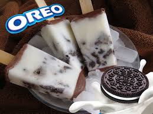

Paletas heladas de galleta

Ingredientes
- 1 lata de de Leche Condensada la lechera
- 1 lata de de Leche Evaporada carnation clavel
- 1 lata de de Media Crema nestlé
- 1 cucharadita de de esencia de vainilla
- 2 paquetes de de galletas de chocolate , en trozos (108 g)
Preparación:
- Mezcla la Leche Condensada la lechera con la Leche Evaporada carnation clavel, la Media Crema nestlé y la esencia de vainilla.
- Coloca en los vasitos un poco de galletas de chocolate y vierte lo que licuaste en cada uno; tapa con papel aluminio, inserta un palito de madera en el centro y congela durante 3 horas. Desmolda y ofrece.
- Consejo nutricional: Procura tomar 8 vasos de agua simple diario para mantener una termorregulación normal
¡Y listo para disfrutar!